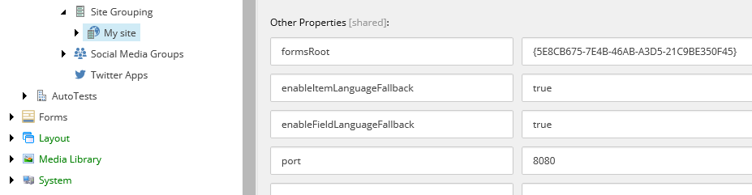

The SXA site definition fields
In SXA, site definitions are done at the item level. This means that you do not have to restart a website after each change in the Sitecore.config file. You can create new sites with SXA without restarting your Sitecore instance.
You can change the site definition fields in sitecore/content/<site collection>/<site>/Settings/Site Grouping/<site>. You can also access these fields from the SXA Site Manager. The SXA site definition items are equivalent to Sitecore <site> nodes that you define within your config file if you build the site without SXA.
The following table lists the SXA site definition fields, their Sitecore equivalent (if any), and a description:
Field | Sitecore equivalent | Description |
|---|---|---|
Site name | name | The name of the site. When you choose a name for the website, you must avoid using characters that are invalid for the website cookies. Therefore, do not use control characters, spaces (" "), semicolons, or commas in your website names. |
Valid for environment | Defines the environment that the site is resolved for. Allowed values are empty string, *, or an environment name without blank spaces. You must define the environment name that this field refers to in your config file. | |
Target hostname | targetHostName | Specifies the host name used while generating links and sitemaps. |
Hostname | hostName | Defines the host name that the site resolves to. |
Virtual folder | virtualFolder | Use this field to resolve sites with the same host name but located in a different virtual folder. |
Start item | startItem | Defines the path to the root item of the site. |
Database | database | Defines the database containing the items that Sitecore uses for rendering the site for visitors. |
Domain | domain | Defines the Sitecore security domain of the site. |
Link provider name | Defines the link provider. With SXA, you can select a different link provider for different sites. This can be useful when you have multiple sites that all have different link requirements. | |
Linkable site | Select to make a site linkable. | |
External port | The port number is used to generate links that can access the site from outside the network when the site is behind NAT (network address translation). | |
Port | port | The port number of the incoming URL. |
Scheme | scheme | The scheme that indicates the protocol type: HTTP or HTTPS. |
Other Properties | Place for additional attributes for SXA sites that you would normally have in your site definitions config file. Sitecore or Sitecore modules might require other properties that were not explicitly specified in the Site Grouping node. You can configure these properties in the Other Properties field by specifying the key/value pair. These properties are then sent verbatim to Sitecore site provider. For example, SXA does not have a port property that lets you specify which port your site is exposed under. Another example: in an older version of SXA to enable language fallback for a site, you could add  | |
Predefined application rendering host | Specifies the item that contains information about the rendering host, including the application. The Default item has the following path: /sitecore/system/Settings/Services/Rendering Hosts. The values set on this item override the corresponding values from the site-specific Settings item. | |
Language | language | The default content language for the site. |
Language Embedding | languageEmbedding | Select to show the language in the URL. |
Enable item language fallback | enableItemLanguageFallback | Select to enable item-level language fallback. For more information on enabling item-level language fallback, see Enable and set up language fallback, and scroll to the section about item-level fallback. Item-level language fallback is deselected by default. |
Enable field language fallback | enableFieldLanguageFallback | Select to enable field-level language fallback. For more information on enabling field-level language fallback, see Enable and set up language fallback, and scroll to the section about field-level language fallback. Field-level language fallback is deselected by default. |
Allow debug | allowDebug | Controls whether presentation components collect profile and trace information, affecting whether the debugger renders information about those controls, and whether to show tracing and profiling commands in the debugging ribbon. |
Cache HTML | cacheHtml | Select to enable caching for your site. |
Enable preview | enablePreview | Select to enable preview on the site. |
Enable web edit | enableWebEdit | Select to enable WebEdit mode for the site. |
Enable debugger | enableDebugger | Enable or disable debugging features, including tracing, profiling, and rendering information, and the debugging ribbon. |
Disable client data | disableClientData | Select to disable storage required for CMS user interfaces for the site. |
Disable browser caching | disableBrowserCaching | Set to Yes to disable browser caching for the site. Set to Default to have the value of the |
Login page | loginpage | NoteThis field is not active in Experience Manager or Experience Manager Cloud, or if you are using headless sites. |
Require login | requireLogin | Select to require users to log in to enter the site. |
Html cache size (in MB) | htmlCacheSize | The maximum size of the html cache. |
Registry cache size (in MB) | registry | The registry cache size for the site. |
View State cache size (in MB) | CacheViewState | The view state cache size for the site. |
Xsl cache size (in MB) | xsl | The xsl renderings cache size for the site. |
Filtered Items cache size (in MB) | filteredItemsCacheSize | The size of the cache used to store filtered items according to the |
Error page URL | errorPageUrl | The URL to redirect to if a generic error occurs. |
No access URL | noAccessUrl | The URL to redirect to if access to an item is denied. |
No license URL | noLicenseUrl | The URL to redirect to if a license is missing. |
Layout not found URL | layoutNotFoundUrl | The URL to redirect to if an item's layout is not found. |
Item not found URL | itemNotFoundUrl | The URL to redirect to if an item is not found. |
Link item not found URL | linkItemNotFoundUrl | The URL to redirect to if the linked item is not found. |
No publishable URL | noPublishableUrl | The URL of the page that handles errors if no publishable item or version of an item can be found. |